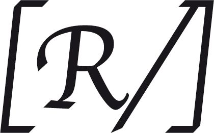

45 (hébr. 46) | Il est avec nous |
1Du maître de chœur. Des fils de Coré. Sur les « ‘alamôth ». Cantique.
2Dieu est pour nous refuge et force,
secours dans la détresse, toujours offert.
3Nous serons sans crainte si la terre est secouée,
si les montagnes s’effondrent au creux de la mer ;
4ses flots peuvent mugir et s’enfler,
les montagnes, trembler dans la tempête :

[Il est avec nous,
le Seigneur de l’univers ;
citadelle pour nous,
le Dieu de Jacob !]
5Le Fleuve, ses bras réjouissent la ville de Dieu,
la plus sainte des demeures du Très-Haut.
6Dieu s’y tient : elle est inébranlable ;
quand renaît le matin, Dieu la secourt.
7Des peuples mugissent, des règnes s’effondrent ;
quand sa voix retentit, la terre se défait.

8Il est avec nous,
le Seigneur de l’univers ;
citadelle pour nous,
le Dieu de Jacob !
9Venez et voyez les actes du Seigneur,
comme il couvre de ruines la terre.
10Il détruit la guerre jusqu’au bout du monde,
il casse les arcs, brise les lances, incendie les chars :
11« Arrêtez ! Sachez que je suis Dieu.
Je domine les nations, je domine la terre. »
12Il est avec nous,
le Seigneur de l’univers ;
citadelle pour nous,
le Dieu de Jacob !